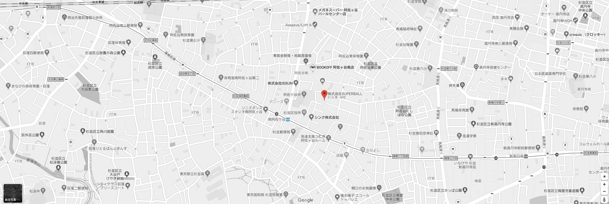

受賞
- 2011年度グッドデザイン賞 「コミュニティ・地域社会のデザイン」
2k540 AKI-OKA ARTISAN
- 第46回 SDA賞 「奨励賞・地区賞」
2k540 AKI-OKA ARTISAN
- 第7回キッズデザイン賞 「感性・創造性部門」
ギャラクシティ
- 第32回ディスプレイ産業賞 「ディスプレイ産業奨励賞」
ギャラクシティ
- DSA日本空間デザイン賞2013 「優秀賞・企画研究特別賞」
ギャラクシティ
- JCD DESIGN AWARD 2013 「BEST100」
ギャラクシティ
- 第47回SDA賞 「入選」
ギャラクシティ
- DSA日本空間デザイン賞2016 「BEST50」
Sir Thomas LIPTON TEA HOUSE GINZA
- DSA日本空間デザイン賞2018 「BEST50」
肥前さが幕末維新博覧会 幕末維新記念館・リアル弘道館・葉隠みらい館
- 第52回日本サインデザイン賞 「入選、九州地区賞」
肥前さが幕末維新博覧会 幕末維新記念館・リアル弘道館・葉隠みらい館

阿佐ヶ谷駅南口よりパールセンター商店街アーケードを直進。7分ほど進んだ左手「スーパーアキダイ」のビル5階。
2a出口を出て頂き左手に曲がり、青梅街道を新宿方面に直進。1つ目の信号（杉並警察署前）を左折(パールセンター商店街入口)。2分ほど進んだ右手「スーパーアキダイ」のビル5階。